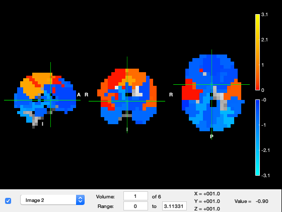
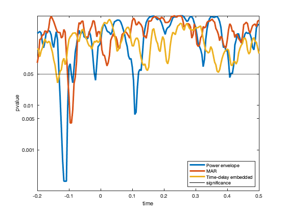

HMM - resting state and task data
This example shows how to use the HMM to infer transient states based on their spectral characteristics.
Three possible models are used:
1. The HMM-Gaussian, which is run on the power time series. The power time series reflects the fluctuations in the amplitude of signal. Therefore, this variant of the HMM captures changes in the instantaneous power, as well as changes in the power correlations across regions. This model is appropriate when we have many channels and we only want to focus on power changes.
2. The HMM-MAR, where each state is an multivariate autoregressive model (MAR). The MAR is essentially a linear dynamical system that captures information of the power of the signals and the phase relations between the different channels; also, these properties are defined as a function of frequency (for 10Hz, for 15Hz, etc). The HMM-MAR therefore is able to pick up on more nuanced information than the HMM-Gaussian. This model is appropriate when we have spectrally and temporally rich data, but it is not appropriate when we have more than a few channels.
3. The TDE-HMM, where each state is a cross-covariance matrix, defined across space and time. This cross-covariance matrix also contains information of power and phase relations between the different channels for each frequency; however, the amount of detail that it has on these quantities is considerably lower than the HMM-MAR (that is, it can be considered a simplification of the HMM-MAR model). For this reason, the TDE-HMM is a good model when we want to model many channels (e.g. MEG across the entire brain) while having some information of the phase.
Note that the toolbox is called HMM-MAR only for historical reasons, but contains all these three models (and more). This can be a bit confusing - in what follows, by HMM-MAR we will refer to the HMM with an autoregressive observation model (not to the software package)
% We will first set up the necessary directories % Software directories: **you need to update OSLCOURSE_dir** to your local directory OSLCOURSE_dir = '/Users/dvidaurre/Work/Matlab/ohba_analysis/'; HMMMAR_dir = [OSLCOURSE_dir '/HMM-MAR']; OSLDIR = [OSLCOURSE_dir '/osl-core']; ohbaexternal_dir = [OSLCOURSE_dir '/ohba-external']; data_dir = [OSLCOURSE_dir 'OSL_course/data_HMM/']; % Name for this HMM-MAR analysis: results_file = [data_dir '/results.mat']; % Precomputed results precomputed_results_file = [data_dir '/precomp_results.mat']; % Atlas file, necessary to show the maps atlasfile = [OSLCOURSE_dir '/parcellations/fmri_d100_parcellation_with_PCC_tighterMay15_v2_8mm.nii.gz']; % add the HMMMAR paths % HMM-MAR is standalone, so it does not hold any dependence with OSL or % other software packages addpath(genpath(HMMMAR_dir)) % if true, it will use precomputed results; set it to false to run yourself precomputed_results = true; % if true, it will call osleyes to show spatial maps with the HMM states show_maps_osleyes = true; if show_maps_osleyes addpath(genpath(OSLDIR)) % OSL toolbox osl_startup end conditions = {'Famous face','Unfamiliar face','Scrambled face'};
Warning: Found OSLDIR environment variable; shutting down before starting up again... [OSL] Cleaned up the path. Bye now! [OSL] Starting up from folder: /Users/dvidaurre/Work/Matlab/ohba_analysis [OSL] Using configuration file: /Users/dvidaurre/Work/Matlab/ohba_analysis/osl.conf
We load the continuous data, for one subject This 50 min of MEG data, 38 ROIs. The variables contained in this data file are:
- The time series X, with dimension (time by channels)
- A vector T, containing the length of each data segment; we have various data segments because during preprocessing we have removed some bad parts
- The stimulus vector, containing the stimulus shown at each time point
data_file = [data_dir 'subj_2.mat'];
load(data_file);
For the HMM-Gaussian, states reflect distinct, recurrent patterns of power and functional connectivity (in terms of power correlation).
For this, perform the following steps, which are all implemented in the HMM toolbox
1. Bandpass-filtering: we would be discarding very slow and very fast frequencies, although we also could use it to focus on a particular band of interest.
2. Getting power time courses: using the Hilbert transform we will get rid of the phase, information, producing time series that reflect only the changes on power.
3. Subsampling: because power changes are slow, we can afford downsampling the data to reduce the computational load without losing statistical power on the estimation. Also, downsampling will enhance the estimates of functional connectivity.
This is the method established in Baker et al. (2014), but here applied on task data
Again, note that, although this uses the hmmmar() function, the model that it estimates for the states is not a MAR model, but a Gaussian model. That is, even though is called HMM-MAR, the toolbox can actually be used to estimate other models.
options = struct(); % number of states: in general, the higher this number, the more "detailed" will be the state decomposition. % (By running the model with different number of states, we could get some sense of "state hierarchy"). options.K = 6; % order=0 corresponds to a Gaussian distribution (adequate for power time series). % By setting order > 0, we will be running the HMM-MAR (see below). options.order = 0; % model connectivity, covtype='full' means that we model the covariance % between regions, and that this is specific for each state. That is, by % using this parameter, states will have different estimations of % functional connectivity. options.covtype = 'full'; % zeromean=0 means that we model the mean, i.e. model the "amount of power"; % zeromean=1 means that we do *not* model the mean. % In this case, we do model the mean, which in this case will contain information about % the amount of power per region when any given state is active. options.zeromean = 0; % standardize each region, making the signal to have mean zero and standard % deviation 1. options.standardise = 1; % onpower=1 indicates that we will be taking the Hilbert envelopes of the % signal, therefore ignoring the phase. This is they key parameter to run % the HMM on power signals. options.onpower = 1; % We run the HMM on a low-dimensional version of the data, which we obtain by applying PCA; % this will serve to remove some noise and to avoid overfitting. options.pca = 0.95; % we focus on frequencies up to beta. We could also play with this parameter to find % states that are specific to a specific frequency band options.filter = [0 30]; % Sampling frequency in the data options.Fs = 250; % show progress? options.verbose = 1; % some options relative to training, we will make it cheap to run: options.initrep = 1; % to make it quicker - leave by default otherwise options.initcyc = 1; % to make it quicker - leave by default otherwise options.cyc = 30; % to make it quicker - leave by default otherwise
We run the HMM, which takes a few minutes on one subject Note that we often do this at the group level; here is done only on one subject for practical reasons
if precomputed_results load(precomputed_results_file,'hmm_env','Gamma_env') else tic [hmm_env,Gamma_env] = hmmmar(X,T,options); toc % 4min,30seg save(results_file,'hmm_env','Gamma_env') end
% We now show the states in osleyes. By flicking through the different % "Volumes", one can see the power distribution of the different states. % Warmer colours mean more power, and colder colours mean less power.
if show_maps_osleyes % We see states with visual, motor, frontal activations, etc p = parcellation(atlasfile); % load the parcellation net_mean = getMean(hmm_env); % get the mean activity of each state net_mean = zscore(net_mean); % show activations for each state relative to the state average p.osleyes(net_mean); % call osleyes end
Parcellation is being clipped to template Warning - parcellation is being binarized
Now that we have the HMM model, we shall compute the spectral information of the states (power, coherence, etc). In the case of the HMM-MAR, as we will see below, the MAR parameters themselves contain this spectral information. Here, because we are using a Gaussian distribution on wideband power, we don't know what is happening in the frequency domain when each state is active, above and beyond gross changes in wideband power.
However, we can estimate this frequency information, by looking back at the data and using the state time courses we had previosly inferred. For this, we will be using a weighted version (state-wise) of the multitaper, proposed in (Vidaurre et al. 2016). In brief, this basically weights the data with the state time course for each state, such that segments of the data where a given state has a higher probability of being active will contribute more to the final spectral estimation.
% We set the options for the spectral estimation: options = struct(); options.fpass = [1 40]; % frequency range we want to look at, in this case between 1 and 40 Hertzs. options.tapers = [4 7]; % internal multitaper parameter options.Fs = 250; % sampling frequency in Hertzs options.win = 10 * options.Fs; % window length, related to the level of detail of the estimation; options.order = 0; options.embeddedlags = 0; % that is, if we increase the win parameter, we will obtain an estimation that is more detailed in the frequency scale % (i.e. contains more frequency bins between 1 and 40 Hertzs) at the expense of some robustness. if precomputed_results % Estimate the spectra load(precomputed_results_file,'spectra_env') else % load a precomputed results tic spectra_env = hmmspectramt(X,T,Gamma_env,options); toc % 3min,30seg save(results_file,'spectra_env','-append') end
% We now show the spectra of the states; each colour represents one % state, the diagonal panels represent power, and the off-diagonal % panels represent coherence (phase coupling). For simplicity, while we have this % information for 39 channels covering the entire brain, we just show the % spectral information here for the low-order visual areas
plot_hmmspectra (spectra_env,[],[],[],[],channels_prim_visual_cortex);
For the actual HMM-MAR approach, these states are based on autoregressive models, i.e. linear functions that predict each time point as a function of its previous data points. Remember that, as opposed to that, the HMM-Gaussian just uses the mean and the covariance of the data, without looking to any temporal or spectral relationships in the data. Thus, the states of the HMM-MAR:
(i) are spectrally defined, i.e. the characteristics of interest are defined as a function of frequency,
(ii) are based on the raw time series, i.e. we do not need to bandpass filter or compute power envelopes,
(iii) are not only sensitive to power differences but also to phase coupling.
In particular, this script will estimate a group (spectrally-defined) HMM from MEG task data, using two source-reconstructed regions in the primary visual cortex (left and right), band-pass filtered between 1 and 45 Hz.
The script follows the paper Vidaurre et al. (2016), which used data from the motor cortex
options = struct(); % Given that we will be looking to 2 regions only, we set it to 3 states instead of 6 options.K = 3; % order=0 corresponds to a Gaussian distribution (adequate for power time series). % By setting order > 0 and covtype='diag', we will be running the HMM-MAR % We also need to *not* model the mean options.order = 3; options.covtype = 'diag'; options.zeromean = 1; % standardize each region options.standardise = 1; % Sampling frequency in the data options.Fs = 250; % show progress? options.verbose = 1; % some options relative to training, we will make it cheap to run: options.initrep = 1; % to make it quicker - leave by default otherwise options.initcyc = 1; % to make it quicker - leave by default otherwise options.cyc = 30; % to make it quicker - leave by default otherwise % We run the HMM, again on one subject only to save time % select the channels that correspond to primary visual cortex channels_prim_visual_cortex = [26 27]; if precomputed_results load(precomputed_results_file,'hmm_mar','Gamma_mar') else tic [hmm_mar,Gamma_mar] = hmmmar(X(:,channels_prim_visual_cortex),T,options); toc % 2min,10seg save(results_file,'hmm_mar','Gamma_mar','-append') end
As opposed to the HMM-Gaussian run on power, the state MAR parameters contain the spectral information of the states. To access those, we need to Fourier-transform these MAR parameters, which are defined in the temporal domain, into the spectral domain. This way, we will have, for each state, estimates of power, coherence, phase relations, etc.
% We set the options to get the spectral estimation from the MAR parameters options = struct(); options.fpass = [1 40]; % frequency range we want to look at options.Nf = 100; % number of frequency bins options.Fs = 250; % sampling frequency in hertzs % We can post-hoc increase the MAR order to get a more detailed spectra (i.e. more frequency peaks). % This implies a re-estimation of the MAR model, using this new order and the same state time courses options.order = 15; if precomputed_results % Estimate the spectra load(precomputed_results_file,'spectra_mar') else % load a precomputed results tic spectra_mar = hmmspectramar(X(:,channels_prim_visual_cortex),T,[],Gamma_mar,options); toc % 0min,5seg save(results_file,'spectra_mar','-append') end
% We now show the spectra of the states, where each colour represents one % state. The diagonal panels represent power, whereas the off-diagonal % panels represent coherence (phase coupling)
plot_hmmspectra (spectra_mar);

The HMM with a MAR observation model works well to model spectral changes in just a few regions with a rich spectral profile. If we wish to model the entire brain, this model does not work that well because it has too many parameters. Instead, we can use a simplification of the MAR model; here, each state is defined by a cross-covariance matrix across time and regions. (More precisely, it is a low-rank cross-covariance matrix, because we work on PCA space.) We call this the TDE-HMM, or time-delay embedded HMM. At the expense to lose some spectral information that the MAR contains, the TDE-HMM is able to model spectral changes across many regions, and, like the MAR, is also run on raw data.
The script follows the paper Vidaurre et al. (2018) Nat Comms, which used pure resting-state data
options = struct(); % We go back to 6 states options.K = 6; % The TDE model is set up with the following parameters: options.order = 0; options.covtype = 'full'; options.zeromean = 1; options.embeddedlags = -7:7; % 15 lags are used from -7 to 7, this defines the length of the modelled autocorrelations options.pca = 39 * 2; % twice the number of regions (see the logic of this on Vidaurre et al. 2018) % standardize each region options.standardise = 1; % Sampling frequency in the data options.Fs = 250; % show progress? options.verbose = 1; % some options relative to training, we will make it cheap to run: options.initrep = 1; % to make it quicker - leave by default otherwise options.initcyc = 1; % to make it quicker - leave by default otherwise options.cyc = 30; % to make it quicker - leave by default otherwise % We run the TDE-HMM, again on one subject only to save time if precomputed_results load(precomputed_results_file,'hmm_tde','Gamma_tde') else tic [hmm_tde,Gamma_tde] = hmmmar(X,T,options); toc % 13min save(results_file,'hmm_tde','Gamma_tde','-append') end
As we did before with the HMM-Gaussian on power, we are going to use the multitaper to estimate the frequency content of the states. This one might take a bit longer to run.
% We set the options for the spectral estimation: options = struct(); options.fpass = [1 40]; % frequency range we want to look at, in this case between 1 and 40 Hertzs. options.tapers = [4 7]; % internal multitaper parameter options.Fs = 250; % sampling frequency in Hertzs options.win = 10 * options.Fs; % window length, related to the level of detail of the estimation; options.embeddedlags = -7:7; % that is, if we increase the win parameter, we will obtain an estimation that is more detailed in the frequency scale % (i.e. contains more frequency bins between 1 and 40 Hertzs) at the expense of some robustness. if precomputed_results % Estimate the spectra load(precomputed_results_file,'spectra_tde') else % load a precomputed results tic spectra_tde = hmmspectramt(X,T,Gamma_tde,options); toc % 9min save(results_file,'spectra_tde','-append') end
% We now show the spectra of the states; again each colour represents one % state, the diagonal panels represent power, and the off-diagonal % panels represent coherence (phase coupling). For simplicity, while we have this % information for 39 channels covering the entire brain, we just show the % spectral information here for the low-order visual areas
plot_hmmspectra (spectra_tde,[],[],[],[],channels_prim_visual_cortex);

With this method, we have a spectrally-defined description of each state; for example, we have an estimation of power for each frequency bin, region and state. Therefore, we can construct brain maps for each frequency. Here, instead, we will just show wideband maps by aggregating the estimation across frequencies. For this, we use spectdecompose(), which is configured here to pull out two frequency components: one will be a high frequency and the other will be a slow-to-middle frequency. We will next get descriptions of the states for these two frequency modes, and will show the maps for the slow-to-middle frequency one.
Note that this function can be used to pull out more frequency modes, as in Vidaurre et al. (2018), Nature Communications.
% This actually takes quite a bit of time to run, so better to load the % precomputed results. params_fac = struct(); params_fac.Base = 'coh'; params_fac.Method = 'NNMF'; params_fac.Ncomp = 2; % set to a higher value (4) to pull out more detailed frequency modes if precomputed_results % Estimate the spectra load(precomputed_results_file,'spectral_factors','spectral_profiles') else tic [spectral_factors,spectral_profiles] = spectdecompose(spectra_tde,params_fac); save(results_file,'spectral_factors','spectral_profiles','-append') toc % 27min end
We then show state maps in osleyes, for the slow-to-middle frequency mode We see different states for visual, temporal, frontal and parietal regions
if show_maps_osleyes p = parcellation(atlasfile); % load the parcellation net_mean = zeros(39,hmm_tde.train.K); for k = 1:length(spectra_tde.state) net_mean(:,k) = diag(squeeze(abs(spectral_factors.state(k).psd(1,:,:)))); end net_mean = zscore(net_mean); % show activations for each state relative to the state average p.osleyes(net_mean); % call osleyes end
Parcellation is being clipped to template Warning - parcellation is being binarized
We now look at the temporal information of the states. Given that this is task data, we will later look at how the states get modulated by the task. But first we will have a look at an arbitrary segment of the states time courses to have a feel of the time scales at which the states change. In the plots here, each colour represent one state.
t = 3001:5001; % some arbitrary time segment figure subplot(3,1,1) area(t/250,Gamma_env(t,:),'LineWidth',2); xlim([t(1)/250 t(end)/250]) xlabel('Time'); ylabel('State probability') title('HMM-Gaussian') subplot(3,1,2) area(t/250,Gamma_mar(t,:),'LineWidth',2); xlim([t(1)/250 t(end)/250]) xlabel('Time'); ylabel('State probability') title('HMM-MAR' ) subplot(3,1,3) area(t/250,Gamma_tde(t,:),'LineWidth',2); xlim([t(1)/250 t(end)/250]) xlabel('Time'); ylabel('State probability') title('TDE-HMM' )
The HMM is based on the Markovian assumption. That means that, as far as the model is concerned, what state is active at each time point depends on what state was active in the previous time point. (Strictly speaking, this is a conditional dependency; that is, if you knew what state was active in the previous time point for sure, then you the state 'now' would be completely independent of all the time points before that). Given such Markovian assumption, a useful thing to look at is the probability of transitioning from one state to another, which is contained in the transition probability matrix.
Note that the order of the states is arbitrary for each run.
figure subplot(1,3,1) imagesc(getTransProbs(hmm_env)); colorbar xlabel('From state'); ylabel('To state') title('HMM-Gaussian') subplot(1,3,2) imagesc(getTransProbs(hmm_mar)); colorbar xlabel('From state'); ylabel('To state') title('HMM-MAR' ) subplot(1,3,3) imagesc(getTransProbs(hmm_tde)); colorbar xlabel('From state'); ylabel('To state') title('TDE-HMM' )

Other informative statistics about the states is for how long the states remain active before switching to a different state (state life times), which we refer to as the state life times. We compute these here for each HMM modality.
lifetimes_env = getStateLifeTimes (Gamma_env,T,hmm_env.train,[],[],false);
lifetimes_mar = getStateLifeTimes (Gamma_mar,T,hmm_mar.train,[],[],false);
lifetimes_tde = getStateLifeTimes (Gamma_tde,T,hmm_tde.train,[],[],false);
% We concatenate the lifetimes across states
lifetimes_env = lifetimes_env(:)'; lifetimes_env = cell2mat(lifetimes_env);
lifetimes_mar = lifetimes_mar(:)'; lifetimes_mar = cell2mat(lifetimes_mar);
lifetimes_tde = lifetimes_tde(:)'; lifetimes_tde = cell2mat(lifetimes_tde);
Warning: Using the Viterbi path is here recommended instead of the state probabilistic time courses (Gamma) Warning: Using the Viterbi path is here recommended instead of the state probabilistic time courses (Gamma) Warning: Using the Viterbi path is here recommended instead of the state probabilistic time courses (Gamma)
We see that the HMM-Gauss is the one showing the quickest state switching. The TDE-HMM, which has a tendency to focus on slower frequencies, has the longest life times.
figure subplot(1,3,1) hist(lifetimes_env/250,100); xlim([0 0.5]); ylim([0 17000]) xlabel('Life times'); ylabel('No. of visits') title('HMM-Gauss') subplot(1,3,2) hist(lifetimes_mar/250,100); xlim([0 0.5]); ylim([0 17000]) xlabel('Life times'); ylabel('No. of visits') title('HMM-MAR') subplot(1,3,3) hist(lifetimes_tde/250,100); xlim([0 0.5]); ylim([0 17000]) xlabel('Life times'); ylabel('No. of visits') title('TDE-HMM')

In resting-state data, one can validate the states against, for example, separate behavioural information (phenotypes, clinical variability, etc). Here, given that this is task data we are going to look at how the state activations get modulated by the stimulus presentation.
% We compute the state evoked response (locked to stimulus presentation) % for each variety of the HMM, as well as for the raw signal in the primary visual cortex.
evokedGamma_env = cell(3,1); evokedGamma_mar = cell(3,1); evokedGamma_tde = cell(3,1); % Make the state time courses to have the same number of time points than the data Gamma_pad_env = padGamma(Gamma_env,T,hmm_env.train); Gamma_pad_mar = padGamma(Gamma_mar,T,hmm_mar.train); Gamma_pad_tde = padGamma(Gamma_tde,T,hmm_tde.train); evokedField = cell(3,1); window = 2; % window around the stimulus presentation that we will look at channels_prim_visual_cortex = [26 27]; for c = 1:3 % three types of stimulus: 'Famous','Unfamiliar','Scrambled' faces stim = stimulus == c; evokedGamma_env{c} = evokedStateProbability(stim,T,Gamma_pad_env,window,hmm_env.train); evokedGamma_mar{c} = evokedStateProbability(stim,T,Gamma_pad_mar,window,hmm_mar.train); evokedGamma_tde{c} = evokedStateProbability(stim,T,Gamma_pad_tde,window,hmm_tde.train); evokedField{c} = evokedStateProbability(stim,T,zscore(X(:,channels_prim_visual_cortex)),window,hmm_env.train); end t = -(window/2)*250:(window/2)*250; % time around the stimulus figure for c = 1:3 % each colour is a channel subplot(3,4,(c-1)*4 + 1) plot(t/250,evokedField{c},'LineWidth',2); xlim([-1 1]) xlabel('Time') title(['EvokedField: ' conditions{c}]) % each colour is a state subplot(3,4,(c-1)*4 + 2) plot(t/250,evokedGamma_env{c},'LineWidth',2); xlim([-1 1]) xlabel('Time') title(['HMM-Gaussian: ' conditions{c}]) % each colour is a state subplot(3,4,(c-1)*4 + 3) plot(t/250,evokedGamma_mar{c},'LineWidth',2); xlim([-1 1]) xlabel('Time') title(['HMM-MAR: ' conditions{c}]) % each colour is a state subplot(3,4,(c-1)*4 + 4) plot(t/250,evokedGamma_tde{c},'LineWidth',2); xlim([-1 1]) xlabel('Time') title(['TDE-HMM: ' conditions{c}]) end

We saw that the stimulus modulates the state probabilities for all conditions and all models. Now we will test how the activation of the states differ between conditions
We first run some code to put the state time courses into an epoched format, and to build up the appropriate design matrix
window_test = [-0.2 0.5]; % in seconds window_test = round(window_test * 250); % in time points K_env = size(Gamma_env,2); K_mar = size(Gamma_mar,2); K_tde = size(Gamma_tde,2); nsamples = sum(abs(window_test))+1; t = linspace(window_test(1)/250,window_test(2)/250,nsamples); nsamples = length(t); ntrials = sum(stimulus>0); ncond = length(unique(stimulus(stimulus>0))); % Make the state time courses to have the same number of time points than the data Gamma_pad_env = padGamma(Gamma_env,T,hmm_env.train); Gamma_pad_mar = padGamma(Gamma_mar,T,hmm_mar.train); Gamma_pad_tde = padGamma(Gamma_tde,T,hmm_tde.train); Gamma_epoched_env = NaN(nsamples,ntrials,K_env); Gamma_epoched_mar = NaN(nsamples,ntrials,K_mar); Gamma_epoched_tde = NaN(nsamples,ntrials,K_tde); design_mat = NaN(ntrials,ncond); events = find(stimulus>0); for j = 1:ntrials if (events(j) <= -window_test(1)) | (events(j) > size(Gamma_env,1)-window_test(2)) continue end ind = events(j) + (window_test(1):window_test(2)); Gamma_epoched_env(:,j,:) = Gamma_pad_env(ind,:); Gamma_epoched_mar(:,j,:) = Gamma_pad_mar(ind,:); Gamma_epoched_tde(:,j,:) = Gamma_pad_tde(ind,:); design_mat(j,:) = 0; design_mat(j,stimulus(events(j))) = 1; end good_trials = ~isnan(design_mat(:,1)); Gamma_epoched_env = Gamma_epoched_env(:,good_trials,:); Gamma_epoched_mar = Gamma_epoched_mar(:,good_trials,:); Gamma_epoched_tde = Gamma_epoched_tde(:,good_trials,:); design_mat = design_mat(good_trials,:); design_mat = [ones(size(design_mat,1),1) design_mat];
We then run the testing for each time point, for faces vs. scrambled faces. We use the function hmmtest_epoched, which implements permutation testing for this purpose.
contrast = [0 1 1 -2]'; Nperm = 5000; Y = design_mat * contrast; if precomputed_results load(precomputed_results_file,'pvals_env','pvals_mar','pvals_tde') else tic pvals_env = hmmtest_epoched(Gamma_epoched_env,T,Y,Nperm); pvals_mar = hmmtest_epoched(Gamma_epoched_mar,T,Y,Nperm); pvals_tde = hmmtest_epoched(Gamma_epoched_tde,T,Y,Nperm); toc % 2min save(results_file,'pvals_env','pvals_mar','pvals_tde','-append') end
We plot the p-values for each HMM modality as a function of time. As observed, the HM
figure P = [pvals_env pvals_mar pvals_tde]'; plot(t,log(P),'LineWidth',3); %ylim([]) hold on; plot(t,ones(size(t))*log(0.05),'k'); hold off set(gca,'ytick',log([0.001 0.005 0.01 0.05]),'yticklabel',[0.001 0.005 0.01 0.05]) legend('Power envelope','MAR','Time-delay embedded','significance','location','SouthEast') ylabel('pvalue');xlabel('time')
% As we have seen throughout the tutorial, the HMM provides a decomposition % of the data into states. What properties of the data are these states % picking up on depends on the type of HMM we are using. In this tutorial, % we have tried out three types of HMM: the HMM-Gaussian, the HMM-MAR, and % the TDE-HMM. The HMM overall is unsupervised, and allows us to describe % both resting-state and task data. With task data, as shown here, we can % see, later on, how the states are modulated by the task, and how the distribution of % the states differ across conditions. Another option is to incorporate the % information of the task (e.g. the stimulus) directly into the model; this % is illustrated in the osl_example_decoding.m tutorial. %